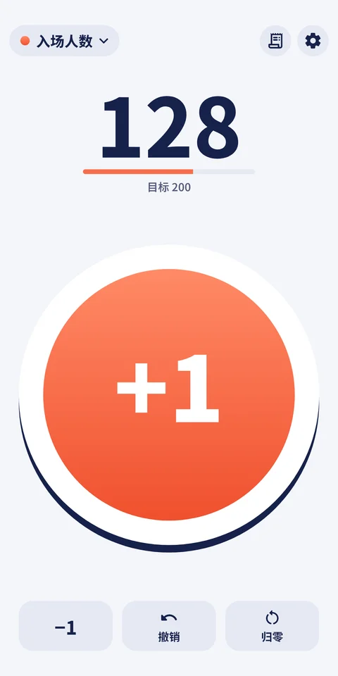
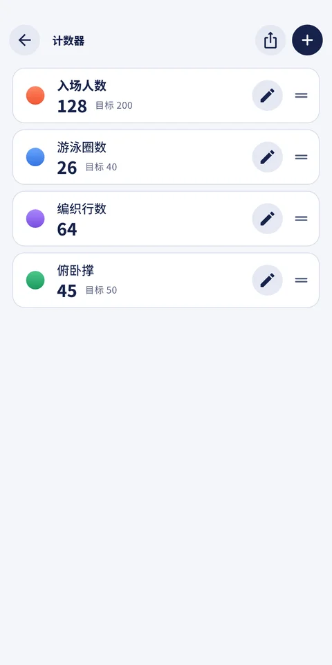
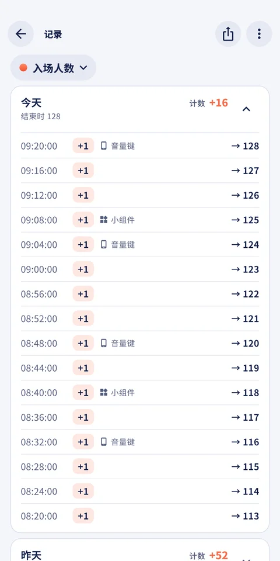
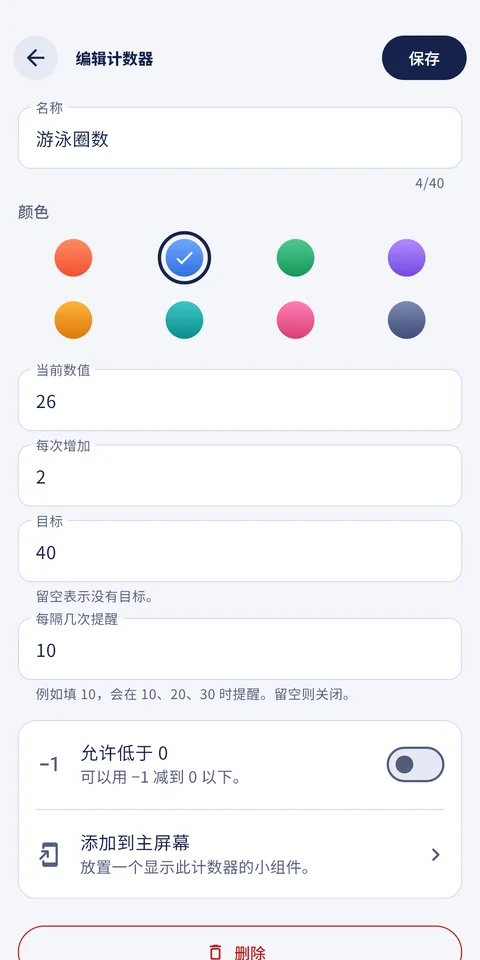
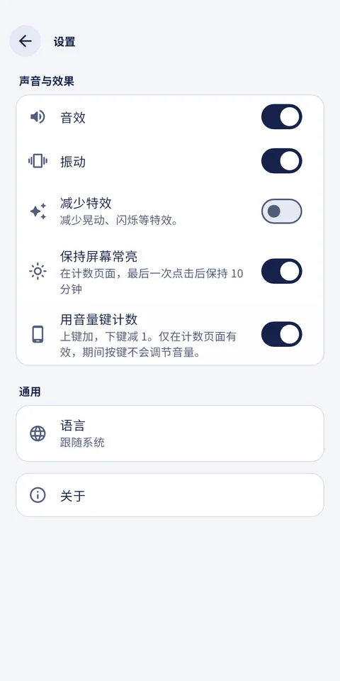
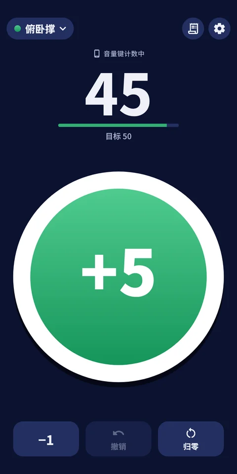
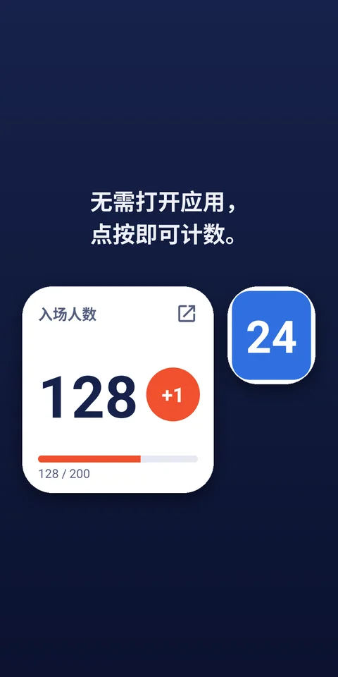

TapAlot 是一款计数器，凡是一个一个数的事都能用。点按大按钮，手指一碰到，数字就加一。每样要数的东西可以各用一个计数器，数过的记录在“记录”里查看。
截图







主要功能
- 一个大按钮 大“加 1”按钮在手指碰到时就计数，数字会轻轻一跳。下面是“减 1”“撤销”和“归零”。“归零”会先确认，当前数值保留在记录中，可用“撤销”恢复。“每次增加”可为每个计数器设为 1 到 9999。
- 多个计数器 想建几个就建几个。每个计数器有名称、颜色（8 种可选）、“起始数值”、“每次增加”，还可以设置“目标”。开启“每隔几次提醒”后，计数每经过该数的倍数，就会有声音和振动提醒；填 10，就在 10、20、30 时提醒。“允许低于 0”默认关闭，开启后用“减 1”可以减到 0 以下。点按顶部的计数器名称打开列表，拖动即可调整顺序。打开应用时，会直接显示上次用的计数器。删除的计数器会在“最近删除”里保留 7 天，可用“恢复”找回。
- 目标 给计数器设置“目标”后，数字下方会出现进度条。达到目标时显示“已达成目标”，并有专属的声音和振动。
- 边点边保存 每点一下都会马上保存，不用另外手动保存。“记录”按天整理每个计数器的记录：当天数了多少、结束时的数值、归零了几次。展开某一天，可以看到每一次点按的时间。较早的记录不会删除，而是合并为每日合计；“清除记录”只清除该计数器的记录。应用还会每天在设备上做一份保管用的副本；如果设备开启了 Android 自动备份，数据也可能包含在备份里。
- 导出 在“记录”里，“导出（CSV）”会通过分享面板发送该计数器的记录；在“计数器”列表里，“全部导出（CSV）”会发送所有计数器。列为计数器、日期、时间、变化、增减、数值、来源。
- 主屏幕小组件 不打开应用，在主屏幕上直接点按就能计数。除了“打开应用”图标，点按小组件任何位置，都会加上“每次增加”的数。可以缩小到 1×1，空间够大时还会显示计数器名称、数值和目标进度。新添加的小组件会显示上次用的计数器；想把其他计数器放到主屏幕，请打开“编辑计数器”，点按“添加到主屏幕”。开启“振动”时，点按小组件会短振一下，没有声音，并在“记录”中显示为“小组件”。
- 音量键与屏幕 在设置中开启“用音量键计数”后，音量上键加、音量下键减 1。只在计数页面显示时有效，其他地方音量键照常调节音量。“保持屏幕常亮”会在计数页面上，让屏幕在最后一次点按后保持 10 分钟不熄灭。
- 外观与声音 每数一下是圆润的木头“嗒”声，达到目标是马林巴琴音，还有短促的振动。设置的“声音与效果”里，“音效”和“振动”各有开关，打开“减少特效”，数字就不再跳动。设备切到深色模式时，界面也跟着变深。
- 使用条件 不用订阅，没有功能被付费锁住，应用里也没有内购，包括小组件在内的所有功能人人能用。唯一的广告是屏幕最下方的一条横幅，离大按钮很远，不会出现盖满屏幕的广告。无需账号，离线运行，计数器和记录留在你的设备上。界面提供五种语言：英语、韩语、日语，以及简体和繁体中文，在设置的“语言”里切换。
支持平台
Android
即将推出